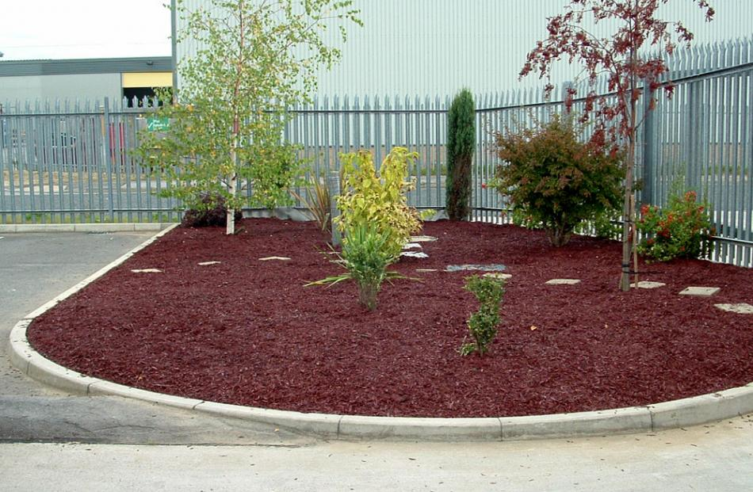

Indo5export is an online wholesale export trading that offers a convenient solution for businesses to find and export products from Indonesia proudly presents exemplify
innovation in tire recycling and utilization: Recycled Chipped Crumb Rubber Granules
Crumb Rubber uses :
Rubber Mulch: It is used as a mulch material in landscaping and gardening to retain moisture, suppress weed growth, and provide insulation for plant roots
Rubber granules for turf also known as rubber infill or infill material, are small pieces of recycled rubber that are used to fill the gaps between artificial grass blades in artificial turf installations. These rubber granules serve several important purposes in artificial turf systems. They provide cushioning and shock absorption, making the playing surface safer
Sports Surfaces: Crumb rubber is often used as an infill material for artificial turf sports fields and playgrounds. It helps provide cushioning and shock absorption, making these surfaces safer for athletes and children
Road Construction: Crumb rubber can be mixed with asphalt to create rubberized asphalt, which is used for road resurfacing and repair. Rubberized asphalt offers improved durability and skid resistance
Playground Safety Surfacing: Crumb rubber can be used as a safety surface material in playgrounds to reduce the risk of injuries from falls
Running Tracks: Infill or top coatings made from crumb rubber are used on running tracks to provide cushioning and reduce the impact on athletes' joints
Automotive Products: Some automobile parts, such as mud flaps and floor mats, are made from crumb rubber due to its resilience and weather resistance
Indonesia is one of the countries that plays a significant role in the global rubber industry, including the production of crumb rubber
Indonesia is one of the world's leading exporters of natural rubber and crumb rubber products. Much of the crumb rubber produced in the country is exported to various international markets
The quality of crumb rubber produced in Indonesia is subject to international standards and regulations to ensure that it meets safety and quality requirements for various applications
Indo5export.com, as a pioneer in exporting recycling-based products, continues to provide innovative solutions that support environmental preservation and the prudent use of resources
We are committed to providing the highest quality products to our customers worldwide, whether in small or large quantitiese
Are you looking for a reliable supply of high-quality Crumb Rubber Granules and Powder to meet your industry needs? You've come to the right place! Contact us at Indo5export.com, and we will be happy to help you find the solution that suits your needs!

